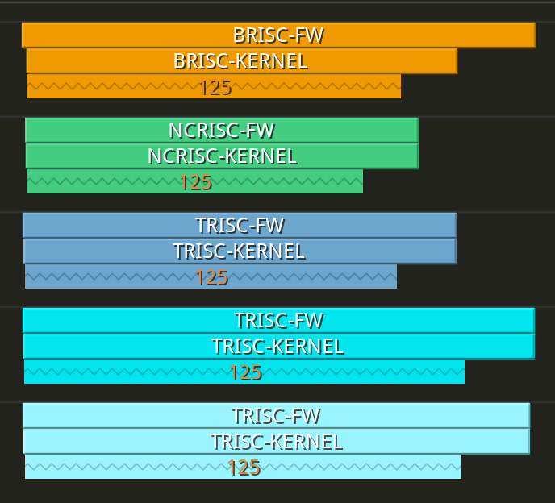
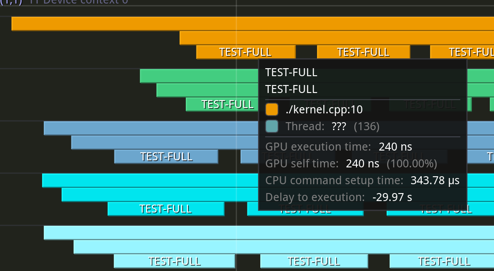

Device Program Profiler
Device-side performance profiling provides a scope-based method for analyzing kernel performance on Tenstorrent hardware, similar to how Tracy works for host-side code. It is a powerful tool for identifying performance bottlenecks and optimizing kernel execution. Profiling is available on all RISC-V cores within a Tensix (including both compute and data movement kernels), as well as on cores outside of a Tensix (such as Ethernet tiles).
This document provides a guide for developers on how to use the device program profiler. It assumes you are familiar with the basic programming examples.
Enabling Device Profiling
Profiling support is enabled by default when building Metalium. Simply build using:
./build_metal.sh
This enables both device-side profiling and Tracy for host-side profiling. For a general overview of profiling in Metalium and how to use the Tracy GUI, see Tracy Profiler.
Device profiling is disabled by default at runtime to avoid unnecessary runtime overhead. To enable profiling, set the environment variable before running your application. You can do this either in your shell session or inline when launching your program:
TT_METAL_DEVICE_PROFILER=1 /path/to/your/application
This flag ensures that the overhead is only incurred when you are actively profiling device code.
Note
Profiling, kernel debug print and watcher cannot be used at the same time, as both features use a significant amount of SRAM for data storage and will conflict with each other. Ensure that TT_METAL_DPRINT_CORES, TT_METAL_WATCHER and TT_METAL_DEVICE_PROFILER are not set simultaneously.
Instrumenting Kernel Code
To profile a section of your C++ kernel, you can use the DeviceZoneScopedN(zone_name) macro. This works just like Tracy’s ZoneScopedN, creating a named zone that will be captured by the profiler.
First, include the necessary header in your kernel file:
#include <tools/profiler/kernel_profiler.hpp>
Then, wrap the code you want to measure with the macro:
void kernel_main() {
DeviceZoneScopedN("MyCustomZone");
// Kernel code to be profiled
}
Note
The DeviceZoneScopedN annotation introduces some overhead. Use it selectively in performance-critical sections, and be cautious when interpreting timings for code with many DeviceZoneScopedN annotations.
Controlling Profiling from Host Code
After instrumenting your kernels, the profiling data is automatically collected when closing the device.
// Run the program
tt::tt_metal::EnqueueProgram(cq, program, false);
tt::tt_metal::Finish(cq);
// Also reads profiler results from the device
tt::tt_metal::CloseDevice(device);
If for any reason you need to manually trigger the reading of profiling results (for example, more then 1000 kernel runs before device close), you can call ReadDeviceProfilerResults:
// Manually read profiler results from the device (if needed)
tt::tt_metal::detail::ReadDeviceProfilerResults(device);
This call should be placed after you have finished running the program of interest. It signals the device to sync the profiling results, which can then be viewed in the Tracy client or analyzed from the generated CSV file.
Example Walkthrough: test_full_buffer
The full_buffer programming example, located in tt_metal/programming_examples/profiler/test_full_buffer, demonstrates how to use the device profiler and will be used throughout this guide to illustrate the concepts.
The host code in test_full_buffer.cpp sets up and runs a simple kernel, defines compile-time arguments like LOOP_COUNT, and calls ReadDeviceProfilerResults to collect the data.
The kernel code in kernels/full_buffer.cpp uses DeviceZoneScopedN to profile a loop of nop instructions:
1// SPDX-FileCopyrightText: 2023 Tenstorrent USA, Inc.
2//
3// SPDX-License-Identifier: Apache-2.0
4
5#include <cstdint>
6#include <tools/profiler/kernel_profiler.hpp>
7
8void kernel_main() {
9 for (int i = 0; i < LOOP_COUNT; i ++)
10 {
11 DeviceZoneScopedN("TEST-FULL");
12 //Max unroll size
13 #pragma GCC unroll 65534
14 for (int j = 0 ; j < LOOP_SIZE; j++)
15 {
16 asm("nop");
17 }
18 }
19}
To build and run this example:
cd $TT_METAL_HOME
./build_metal.sh --build-programming-examples
TT_METAL_DEVICE_PROFILER=1 ./build/programming_examples/profiler/test_full_buffer
The results will be available in the Tracy GUI and in the profile_log_device.csv file.
Analyzing Profiler Output
The primary output of the device profiler is a CSV file, which provides detailed, machine-readable data for analysis. For visual inspection of device-side profiling results alongside host-side data, see Tracy Profiler.
A CSV file named profile_log_device.csv is generated in the ${TT_METAL_HOME}/generated/profiler/.logs/ directory. This file contains the raw profiling data, including the start and end times for each zone, and is useful for automated analysis.
Here is a snippet from the CSV generated by the full_buffer programming example:
ARCH: grayskull, CHIP_FREQ[MHz]: 1202
PCIe slot, core_x, core_y, RISC processor type, timer_id, time[cycles since reset], stat value, Run ID, zone name, zone phase, source line, source file
0,1,1,BRISC,53427 ,11233712278980,0,0,BRISC-FW ,begin,315,tt-metal/tt_metal/hw/firmware/src/tt-1xx/brisc.cc
0,1,1,BRISC,118963,11233712334431,0,0,BRISC-FW ,end ,315,tt-metal/tt_metal/hw/firmware/src/tt-1xx/brisc.cc
0,1,1,BRISC,25255 ,11233712279447,0,0,BRISC-KERNEL,begin,40 ,tt-metal/tt_metal/hw/firmware/src/tt-1xx/brisck.cc
0,1,1,BRISC,90791 ,11233712325701,0,0,BRISC-KERNEL,end ,40 ,tt-metal/tt_metal/hw/firmware/src/tt-1xx/brisck.cc
0,1,1,BRISC,36986 ,11233712279499,0,0,TEST-FULL ,begin,10 ,./kernel.cpp
0,1,1,BRISC,102522,11233712279792,0,0,TEST-FULL ,end ,10 ,./kernel.cpp
...
The log includes default markers like BRISC-FW (profiling a single iteration of the BRISC firmware loop) and BRISC-KERNEL (profiling the duration of the kernel’s main function). Following these are the custom zones you defined, such as TEST-FULL. The source file and line number can help you trace the origin of each zone.
Tracy GUI Integration
When a Tracy client is running, the device profiling data is automatically sent to it, allowing for interactive visualization. You can see the execution timeline for each RISC on each core.
The following screenshot shows a high-level view of the profiled zones. You can see that each RISC reports the zones captured under its main KERNEL scope.

Zooming in reveals the individual TEST-FULL zones executing in series.

Limitations
Buffer Size: Each core has a limited L1 buffer for storing scope data, with space for only 125 scopes.
Clock Sync (Intra-Core): The cycle counts from RISCs on the same core are perfectly synced as they read from the same clock counter.
Clock Sync (Inter-Core): The cycle counts from RISCs on different cores are closely synced but may have minor skews.
Clock Sync (Inter-Device): The cycle counts from cores on different devices are generally not synced.